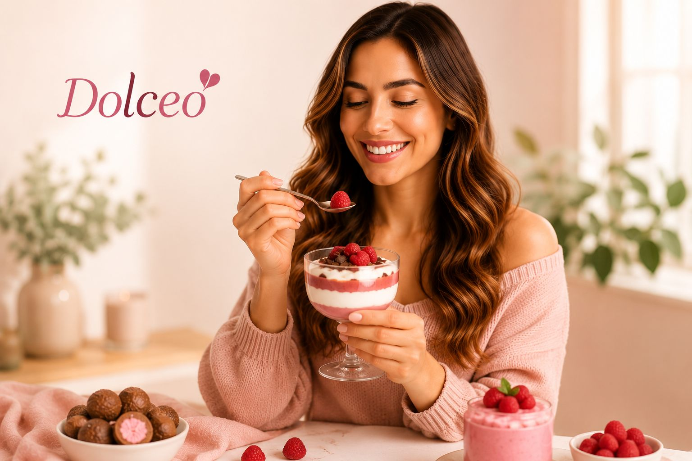
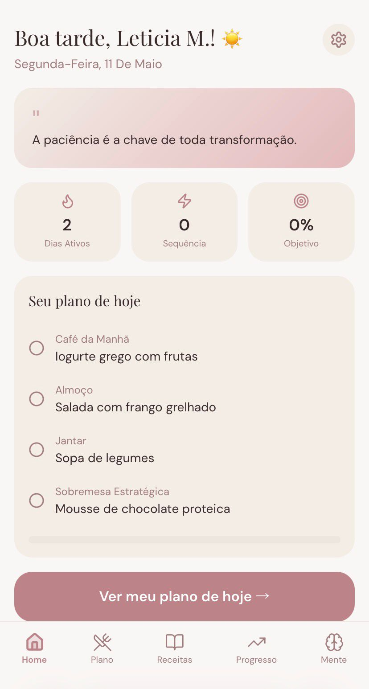
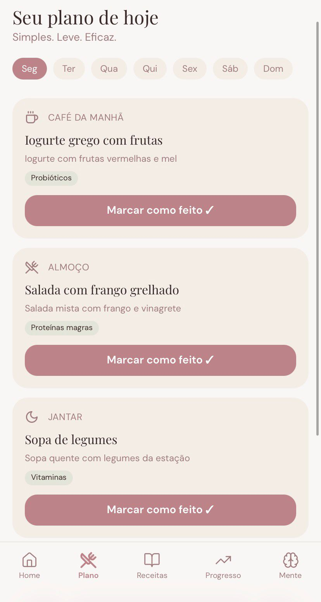
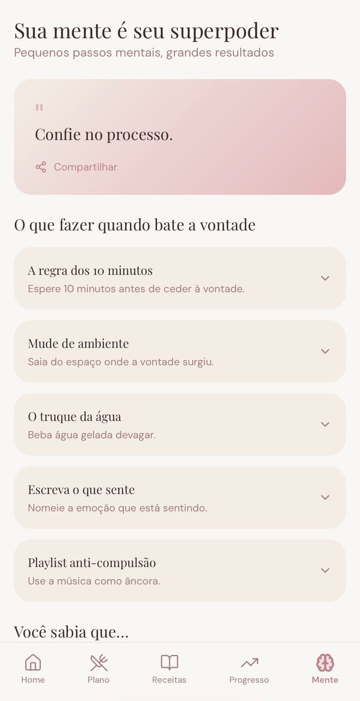

Em 8 semanas, dissolva a compulsão alimentar, recupere sua autoestima e descubra a leveza que sempre foi sua — sem restrições, sem culpa, sem sofrimento.
Quero minha transformação agoraAcesso imediato · 7 dias de garantia

Aquela vontade incontrolável de comer depois das 22h que parece maior do que você.
Você perde, recupera, perde de novo. O ciclo que drena sua energia e sua confiança.
A mente sempre voltando para comida — mesmo quando acabou de comer.
Um deslize e o espiral começa: vergonha, punição, compensação. Exaustão.
Comer no automático, em modo piloto, sem conseguir parar mesmo querendo.
A autoestima que deveria florescer fica presa em julgamentos que você não merece.
A compulsão não é fraqueza.
É uma resposta emocional
que ninguém te ensinou a resolver.
Quando você come no automático, seu cérebro está buscando alívio emocional — não comida. Décadas de padrões emocionais gravados profundamente criam hábitos automáticos que nenhuma dieta consegue alcançar.
A ansiedade alimentar, a compulsão noturna, o ciclo da culpa — tudo isso tem origem emocional. E é exatamente aí que o Método Dolceo age.
Quando você resolve a raiz, a leveza vem naturalmente.
Uma jornada de 8 semanas desenhada com cuidado para levar você da compulsão à liberdade.
Identificamos seus gatilhos alimentares, padrões emocionais e a relação que você construiu com a comida ao longo da vida. Sem julgamentos, com acolhimento.
Técnicas baseadas em comportamento emocional para interromper os ciclos automáticos. Você começa a perceber o que realmente está por trás da compulsão.
Reconecte-se com os sinais naturais do seu corpo. Comer com prazer, sem culpa e sem rigidez — a aliança entre nutrição e intuição.
A nova versão de você se estabiliza. Ferramentas para manter a liberdade alimentar para sempre — e celebrar o quanto você evoluiu.
O app Dolceo é seu companheiro diário nessa jornada — acompanhamento emocional, receitas, progresso e planos diários num só lugar.

Dashboard

Plano diário

Diário emocional
Uma experiência completa e integrada para sua transformação.
Acesso vitalício ao app completo com todas as funcionalidades.
O programa de 8 semanas com todas as fases e suporte.
Guia introdutório para começar sua transformação imediatamente.
O guia completo e aprofundado do método.
Ferramenta exclusiva para registrar e compreender seus padrões.
Receitas prazerosas e equilibradas que nutrem sem culpa.
Rotinas diárias personalizadas para cada fase do método.
Ferramentas práticas para momentos de gatilho emocional.
Tudo que você recebe hoje ficará com você para sempre.
Durante anos, vivi no ciclo exaustivo da compulsão alimentar. Era o efeito sanfona sem fim, a culpa que chegava depois de cada “deslize”, a relação tensa com o espelho e com a comida.
Tentei cada dieta, cada método, cada promessa. E enquanto os resultados vinham e iam, percebi que nunca ninguém havia me ensinado a cuidar da raiz — minha relação emocional com a comida.
Foi então que comecei a estudar comportamento alimentar, hábitos emocionais e alimentação intuitiva. Levei anos construindo o que hoje é o Método Dolceo — uma abordagem que alia ciência emocional, nutrição consciente e um cuidado genuíno com cada mulher.
Porque toda mulher merece se sentir leve — no corpo e na alma.
"Fazia anos que eu não conseguia jantar sem comer compulsivamente depois. Na terceira semana do Dolceo, percebi que nem havia pensado nisso. Foi libertador."
"Eu não esperava que um método assim pudesse me fazer chorar de alívio. Pela primeira vez na minha vida adulta, me sinto em paz com a minha relação com a comida."
"Já tentei de tudo. Dieta low carb, jejum, coach. Nada chegava nessa profundidade. O Dolceo entendeu o que ninguém mais tinha entendido: o meu emocional."
"Perdi o medo de comer em eventos sociais. Voltei a me vestir com prazer. São conquistas que nenhuma balança consegue medir, mas que valem tudo."
Acreditamos tanto na sua transformação que damos 7 dias completos para você experienciar o Método Dolceo. Se por qualquer razão você não se sentir absolutamente encantada com o que encontrar, devolvemos cada centavo — sem perguntas, sem burocracia.
Porque confiamos no método. E confiaremos em você.
Não. O Método Dolceo não é sobre restrição — é sobre liberdade. Você aprenderá a ter uma relação saudável e prazerosa com todos os alimentos, incluindo os doces, sem culpa e sem compulsão.
Sim. O método foi criado especialmente para mulheres que se identificam com episódios de compulsão por doces. A abordagem emocional do Dolceo atua na raiz desse padrão, trazendo mais consciência, controle e leveza.
O Método Dolceo trabalha onde os outros métodos não chegam: o emocional. Dietas, contagem de calorias e força de vontade não funcionam sozinhos porque não resolvem a raiz. O Dolceo ajuda você a reconstruir essa relação de forma mais leve.
O método é desenhado para a vida real. Você precisará de apenas 15 a 20 minutos por dia para acessar o app, praticar as técnicas e registrar no diário emocional. Simples, consistente e poderoso.
Jamais. O Dolceo é baseado em nutrição intuitiva e alimentação consciente — o oposto da restrição. Você aprenderá a se nutrir com prazer, equilíbrio e leveza.
Acesso imediato a tudo — por um investimento que não se compara ao que você já gastou tentando soluções que não chegavam na raiz.
Você recebe hoje:
🔒 Compra 100% segura · Acesso imediato · 7 dias de garantia